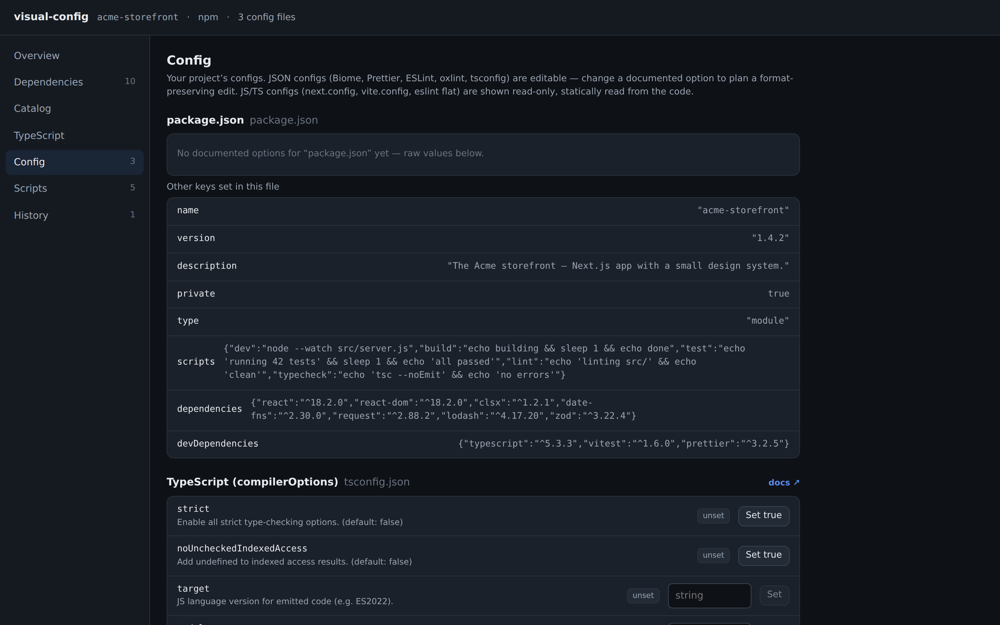
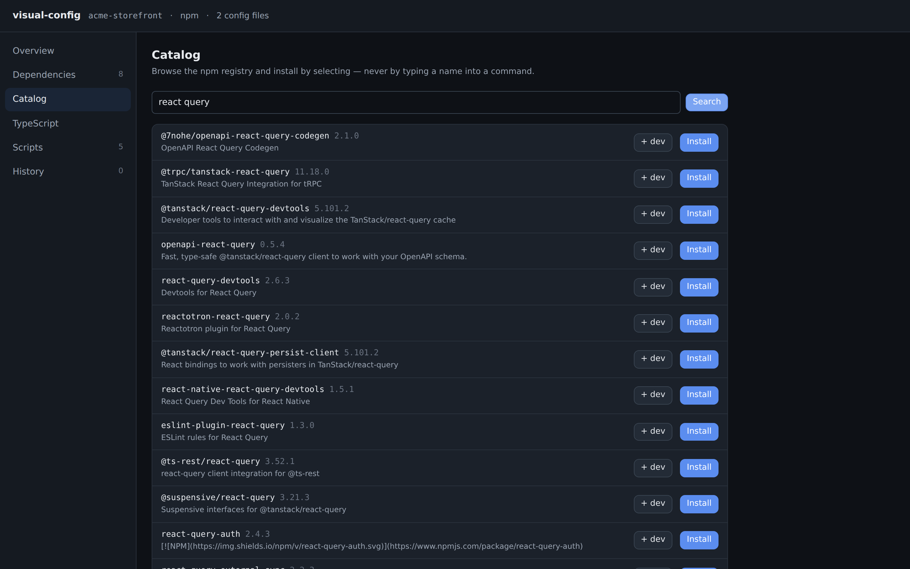

lodash vulnerabilities (^4.17.21)
you
applied
You usually find out a config is wrong when the build breaks. visual-config puts an interface on those files instead: see everything, change anything as a diff you approve, undo any of it. Your AI agents get the same guardrails.
It's one command in any JS/TS project. Nothing to install or configure:

Paste any public GitHub repo. The engine reads it — never runs it — and finds the
outdated deps, vulnerabilities, deprecations and toolchain smells, then hands you a
reviewed diff. This panel simulates the hosted flow; the same scan runs in your terminal
today with npx @apostel/visual-config try <owner/repo>.
Config rewards memorizing schemas and flags over engineering. It deserves an interface. And you can adopt one alone: run one command, and your teammate opens the same repo tomorrow to perfectly ordinary files. No team vote required.
Everything here ships in v0.7.
Vulnerabilities, deprecations, and outdated versions are pulled straight from the npm registry and shown as facts on each package.

Biome, Prettier, ESLint, oxlint, and tsconfig open as forms with each option documented inline. Edits preserve your file's formatting and comments.

The routine work that usually happens in a terminal, with room for typos, becomes clicking on verified data.

Every operation in the UI is also an MCP tool. Agents propose the same diffs, write through the same engine, and land in the same undo history, instead of free-typing shell commands at your config.
init-mcp registers the server for Claude, Cursor, or VS Code in one
step
# the agent-facing server (stdio) npx @apostel/visual-config mcp # operations become plan_* tools that return diffs: plan_install_package plan_upgrade_dependencies plan_set_config_value plan_switch_to_biome plan_add_config plan_set_tsconfig_option plan_add_script ...and every other operation # plus the engine itself: get_project get_diagnostics analyze_bump apply_change undo list_journal

check mode for CIMore detail in the roadmap.
This lodash carries five known vulnerabilities, and the fix is one patch bump away. Click Fix: nothing is written until you approve the exact edit.
lodash vulnerabilities (^4.17.21)
you
applied
The fix is planned first, never written directly.
This one is simulated for the page. In the real tool, the same sheet handles installs, config edits, linter swaps, and changes proposed by your agents.
Requires Node 20 or newer. Nothing else.
Starts a local daemon in the current project and opens the interface in your browser. Local only; no account, no telemetry.
Registers the MCP server for Claude, Cursor, and VS Code, so agents in this repo plan config changes as reviewable diffs.
Clones a repo read-only, reports its outdated, vulnerable, and deprecated dependencies, and prints an upgrade patch to stdout. Never runs the repo's code.
The built-in features are plugins with no special privileges, so anything they can do, your package can do too.
Ship a plugin that gives your ecosystem a first-class panel inside every user's project.
definePlugin from @apostel/visual-config-kitThe base tool states only verifiable facts. Recommendations arrive through opinion packs, each labeled with its author's name.
strict" appears as your advice, attributed to you
Six promises to you, enforced by the engine.
No shadow store, no lock-in. It reads and writes the files git already tracks. Uninstalling leaves your project byte-for-byte as it was.
Planning a change never touches disk. One engine method applies changes, and each operation declares which files it may write; the engine rejects the rest.
Edits are the minimal diff a careful human would make. The write layer is golden-tested, because the first clobbered comment is the end of trust.
Applied changes land in a journal with their inverse. Undo works the same whether a human or an agent made the change.
The base reports only what's verifiable: vulnerable, outdated, deprecated, non-default. Advice comes from opinion packs you install, with the author's name on it.
It runs on your machine against your files. That's the entire data flow.
package.json, tsconfig, Prettier, ESLint, Biome, oxlint, and counting. The files stay plain text in your repo, so keep editing them by hand whenever you feel like it; visual-config picks up right where you left off.